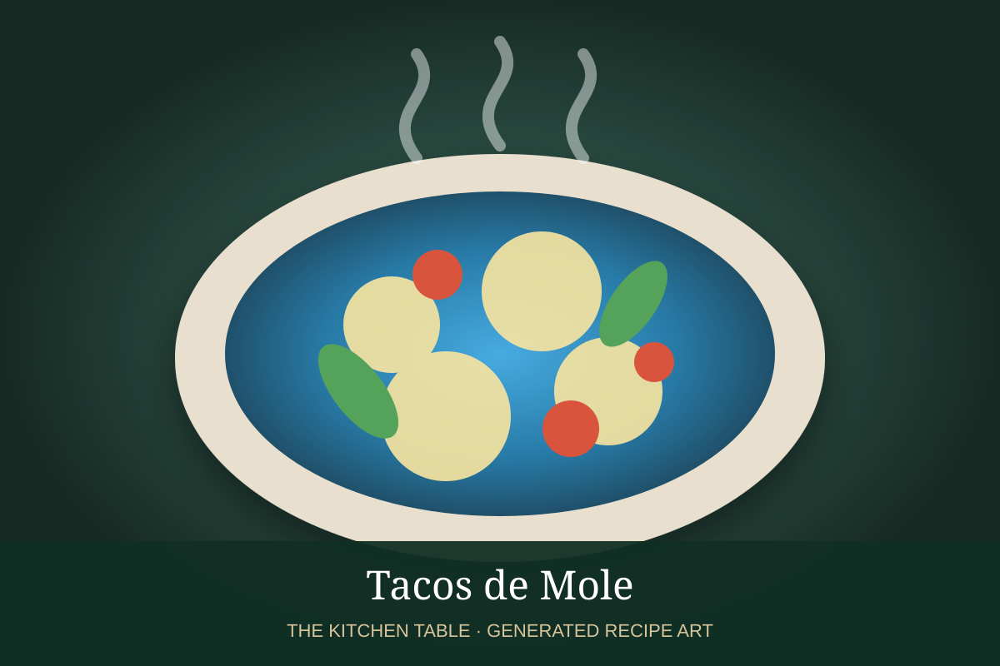

← Back to all recipes
CHICKEN · MEXICAN
Tacos de Mole
Tender shredded chicken coated in mole poblano or mole negro and tucked into warm corn tortillas.
35 minMakes 12 tacos

Photo: Wikimedia Commons
Ingredients
- 3 cups shredded cooked chicken
- 2 cups mole poblano or mole negro
- 1/2 cup chicken stock, as needed
- 12 corn tortillas
- Sesame seeds
- Crumbled queso fresco, optional
- Pickled onion, optional
Preparation
- Warm mole gently, thinning with stock as needed.
- Fold in shredded chicken and simmer until coated and hot.
- Warm tortillas.
- Fill with mole-coated chicken.
- Finish with sesame seeds and optional queso or pickled onion.